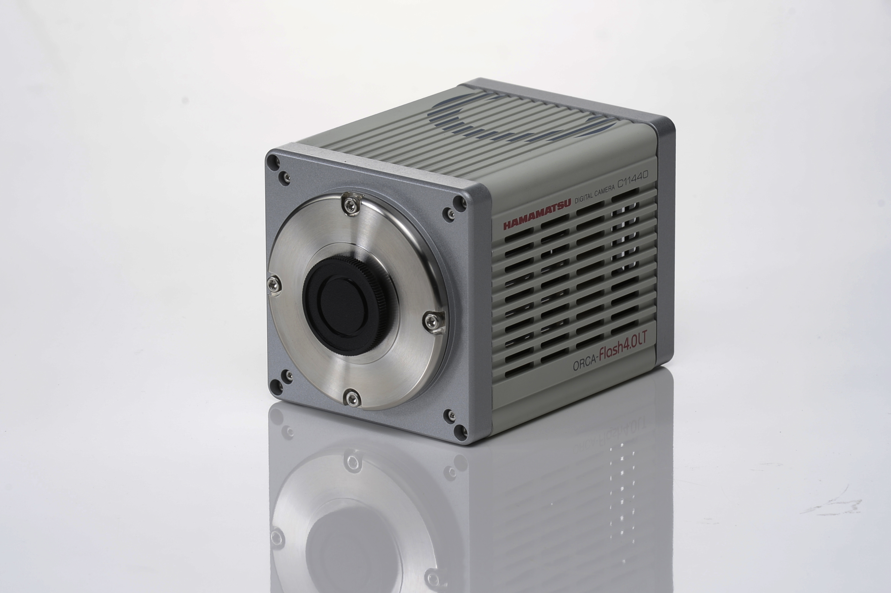
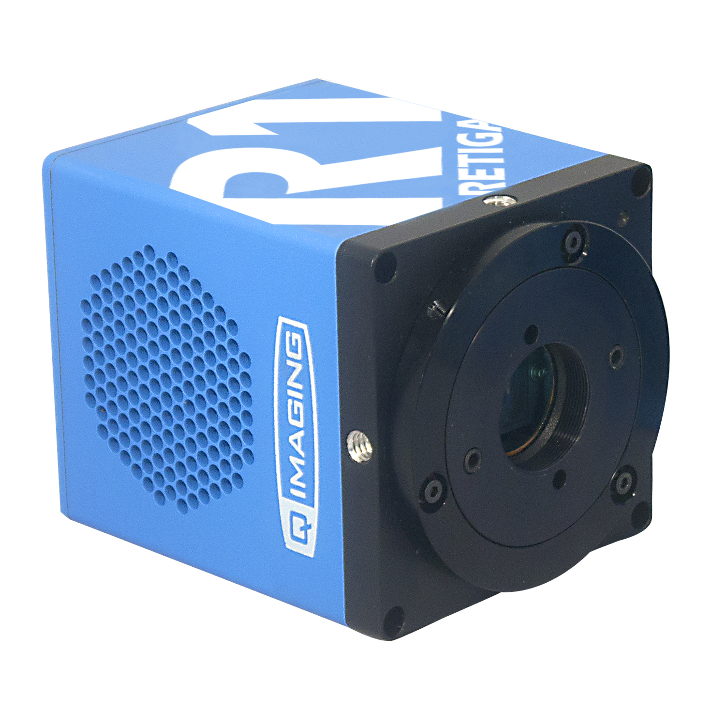
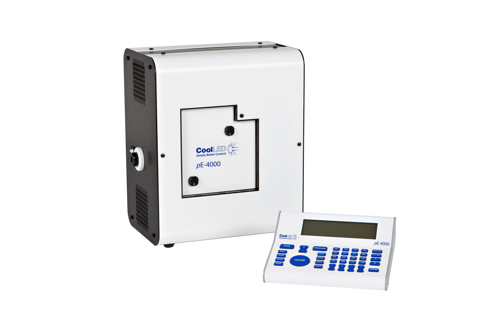
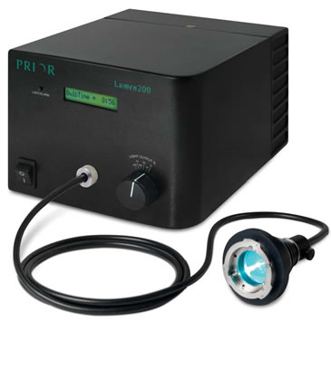
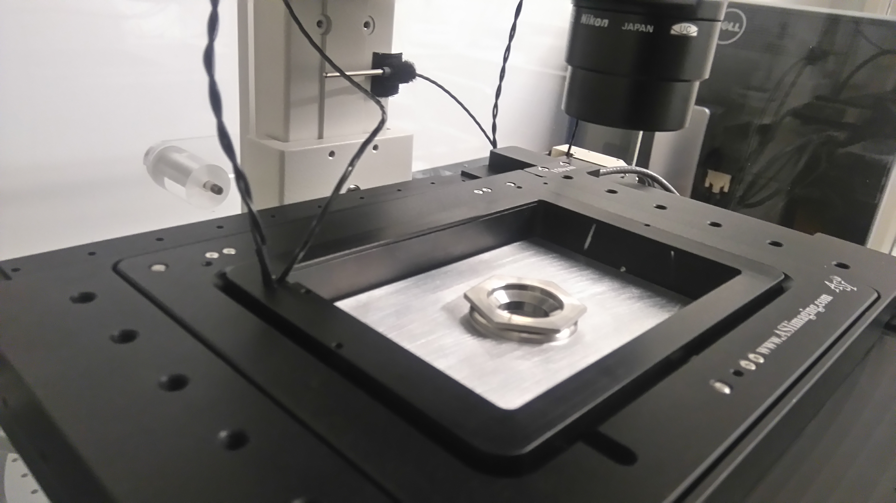

Digital Pixel can provide a wide range of time lapse solutions based either on existing hardware, new hardware, or a combination of the two.
A typical solution would involve using an existing microscope, supplying an XY stage, new state of the art camera, and environmental chamber
to allow the system to function as a powerful wide field time lapse system, capable of acquiring hundreds of experiments over a 1-6 day period.
Typical New System Configuration
- Hamamatsu Flash 4.0 Camera
- High Precision XYZ Stage
- LED Based Fluorescence and Transmitted Light
- Research Grade Inverted Microscope
- Comprehensive Control and Acquisition Software
Experimental Outline
- Mark Multiple XYZ Positions in multiple sample holders using Transmitted Light or Multiple Fluorescence channels
- Define required fluorescence and transmitted light channels
- Define independent camera exposure and light intensity for each channel to minimise photobleaching
- Define Z scan parameter if required
- Define experimental time constant
- Data for each position is stored with experimental data - time stamp z position in a single easy to view file.
Digital Pixel are able to supply the very best in camera and beam splitter technology to provide accuracy and flexibility in dual emission experiments.
The Gemini beam splitter has been designed with the Flash 4.0 in mind, with excellent image registration and minimal image aberration.
Easy in/out filter holders allow easy wavelength selection, as well as a return to full field readout modes.

Hammatsu ORCA Flash 4.0 LT
with W-View Gemini
Beam Splitter or Dual Camera Imaging Technology Fully Supported
- Real-time Dual Wavelengths - Great for dyanamic processes, removes image intenstiy fluctuations
- Independent Exposure Control for both fluorescence Channels - Easy to optimise ratios and signal balance
- Excellent Uniformity of Response
- Precise ratios across the whole field of view
- 100 to 26,000 frames per second
Dual Camera Imaging
- Dual Camera Imaging provides real time image capture with 2Kx2K resolution
- Optimised Hardware and Software Solution
Applications
- Dynamic Calcium Ratiometric or pH Analysis
- Calcium Wave Image Capture
- FRET Image Capture and Analysis
- Dynamic Dual Wavelength Image Capture
ORCA Flash 4.0 LT/ V3
The Orca Flash 4.0 is available in two versions:
The entry level LT uses USB 3.0 as a computer interface, and does not require a specific camera interface card.
With 30fps and three times the field of view of a CCD it is ideal for the majority of imaging applications.

Hammatsu ORCA Flash 4.0 LT
For applications that require high speed, ultra low readout noise or a great QE of 82% the V3 version should be selected.
This version will run using a USB 3.0 interface, but can be upgraded to run with Camera Link to provide over 100 fps at full resolution.
ORCA LT Main Features and Benefits
3 times Field of View
30 frames per second
60 frames per second
USB 3.0 Interface
30 frames per second
60 frames per second
USB 3.0 Interface
2K x 2K array with 6.5 micron pixels
Full Readout, Easy focusing, Fast image capture
2K x 1K Readout
Full Readout, Easy focusing, Fast image capture
2K x 1K Readout
ORCA V3 Main Features and Benefits
82% QE
3 times Field of View
100 frames per second
25,000 frames per second
3 times Field of View
100 frames per second
25,000 frames per second
2K x 2K array with 6.5 micron pixels
Super Sensitive Performance 350 to 900nm
Strip Readout Modes
Super Sensitive Performance 350 to 900nm
Strip Readout Modes
Application Areas
- Whole Organism Imaging
- Large Field Time Lapse Imaging
- High Speed Ca2+ Imaging
- Real Time Confocal Microscopy
- Ratiometric Imaging
- Light Sheet Microscopy
Hamamatsu U111440 SCMOS Camera System
- 2.3M Pixel Sensor
- 80% peak QE at 480nm
- 1920x1200 pixels, 5.86 microns
- Super Sensitive Performance 350 to 900nm
- 65 fps full frame up to 2,000 fps strip readout mode
- USB 3.0 Interface
- Entry Level Price Performance
- System under £4,000
Digital Pixel recommend the Retiga Range of Colour Camera Systems.
There are three cameras in the product range, all come with a two year warranty and an easy to use software package.
There are three cameras in the product range, all come with a two year warranty and an easy to use software package.
- Range of Cameras for every application and budget, optimised for colour and fluorescence applications:
- Powerful Oculus software Included, Easy to use with USB3.0 interface, Fast Readout

Retiga R1 Colour Camera
Retiga 1 |
1360x1024 pixels Pixel Sixe 6.45x 6.45 microns |
| Similar Resolution and Sensor Size to a standard CCD | |
| Readout | 25 frames per second |
| High QE | 75% at 600nm |
| Cooling | -15oC at 22oC ambient |
Retiga 3 |
1920x1460 pixels Pixel Size 4.54x4.54 microns |
| Similar Sensor Size to a standard CCD, with more pixels | |
| Readout | 14 frames per second at full resolution |
| High QE | 75% at 600nm |
| Cooling | -15oC at 22oC ambient |
Retiga 6 |
2688x2290 pixels Pixel Size 4.54x4.54 microns |
| Larger Sensor Size when compared to a standard CCD | |
| Readout | 7 frames per second |
| High QE | 75% at 600nm |
| Cooling | -15oC at 22oC ambient |

CoolLED PE4000 System
LED Light Sources
CoolLED PE4000 LED System
- 25,000 hour lifetime
- Fully independent intensity control over each wavelength channel
- Choice of 4 wavelengths in each spectral band
- Software or TTL switching possible
- Adaptors available for all major microscope brands
Metal Halide Light Sources

Prior Lumen 200 System
Prior Lumen Systems
- Broad band excitation across the whole visible spectrum into the infra red
- 2,000 hour bulb lifetime
- Fibre Optic Mounting to the Microscope

ASI Piezo stage with Digital Pixel Heated Insert
Prior and ASI Stage Solutions
Digital Pixel can supply a wide range of XYZ systems and solutions from Prior and ASI to meet every budget and performance requirement.
Z focus options range from controlling the direct focus on the microscope itself, through to providing a high resolution
Z focus options range from controlling the direct focus on the microscope itself, through to providing a high resolution
Piezo Z Focus Drive system.
Zeiss, Leica, Olympus and Leica Upright and Inverted microscopes are all fully supported.
Zeiss, Leica, Olympus and Leica Upright and Inverted microscopes are all fully supported.
Triple Band Pass filters for triple fluorescence Imaging
Single Filter Sets for High Discrimination Applications
Single Filter Sets for High Discrimination Applications
Multiple Band Pass Filters for use with Filter Wheels and CoolLED Light Sources
Almost double your fluorescence signal by upgrading to High Performance ET Enhanced Transmission Filters - Transmission of greater that 97%
We can provide filters to fit any microscope configuration.
Almost double your fluorescence signal by upgrading to High Performance ET Enhanced Transmission Filters - Transmission of greater that 97%
We can provide filters to fit any microscope configuration.